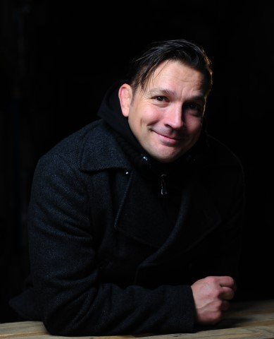

Am Freitag, dem 13. April 2018, veranstaltete der Südthüringer Literaturverein gemeinsam mit der Stadt Suhl, dem Förderverein der Stadtbücherei und weiteren Partnern die 7. Suhler Lesenacht. Nach dem Auftakt um 19:00 Uhr in der Stadtbücherei mit Jakob Hein standen dann noch einmal drei Lesungen zur Auswahl in Suhler Villen im Stadtzentrum.
Als Stargast kam Jakob Hein aus Berlin zu Wort. Der promovierte Arzt, Buch-, Theater- und Filmautor stellte seinen neuen Roman „Die Orient-Mission des Leutnant Stern" vor – die Geschichte von Edgar Stern, der nach dem Kriegsbeginn 1914 für Wilhelm II. den Dschihad organisieren sollte und mit einer falschen Zirkustruppe auf den langen Marsch nach Konstantinopel geht.
Frank Michael Wagner stellte in der Villa im Pflegezentrum „Johannispark" sein Buch „Die Trasse" vor – über den Bau der Erdgasleitung in den 1970er und 1980er Jahren aus der Sowjetunion in die DDR. Im CLIP Film- und Fernsehstudio feierten Ursula Schütt und Günter Giese die Premiere ihres Lyrik-Foto-Bands „Zauberzeichen". In der Villa Schleusinger Straße 5 traten Hendrik Neukirchner und der Meininger Musiker Thomas Schlauraff gemeinsam mit einer „Großstadtsinfonie" auf. Der Eintritt zur Auftaktveranstaltung betrug 5 €, die Nachfolge-Lesungen waren frei.
.jpg)

